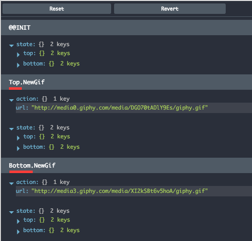

Action Composition in Practice
You might have spotted one problem with our current implementation, both init functions yields a Side effect which resolves in newly dispatched action NewGif, how could our application know which NewGif action belongs to which instance of the GifViewer Component (Top or Bottom)? We'll utilize Action composition here! So we need to turn:
{
type: 'NewGif',
url: 'http://media3.giphy....'
}
into:
{
type: 'Top.NewGif', // or type: 'Bottom.NewGif'
url: 'http://media3.giphy....'
}
With redux-elm it's very easy because library exposes mapEffects function which is doing exactly what we need, you can wrap the Updater (or Init function) with mapEffects function and all the dispatched actions within yielded Side effects will be automatically wrapped by a parent action, in our specific case all the dispatched actions in embed GifViewer Component will be "tagged" with Top or Bottom Action.
import { Updater, mapEffects } from 'redux-elm';
import { init as gifViewerInit } from '../gif-viewer/updater';
const funnyCatsGifViewerInit = gifViewerInit('funny cats');
const funnyDogsGifViewerInit = gifViewerInit('funny dogs');
export function* init() {
return {
top: yield* mapEffects(funnyCatsGifViewerInit(), 'Top'),
bottom: yield* mapEffects(funnyDogsGifViewerInit(), 'Bottom')
};
};
export default new Updater(init).toReducer();
After running the application, you should now be able to see in redux-devtools-extension that Actions are actually composed!
